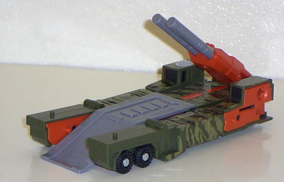

Mega-Octane
(Ruination Part)
Mega-Octane
(Ruination Part)
Allegiance
: Decepticon
Size
: Deluxe
Difficulty of Transformation
: Easy
Japanese Name
: Dolrailer
Color Scheme
: Light orange, dark
army green, light army green, black, gray, and some pinkish red
Mold History
: Mega-Octane's mold
dates all the way back to 1986, when the mold was released as the Combaticon
Onslaught, part of the original Transformers line.
Rating
: 6.7
 \
\
Vehicle mode is a mobile
artillery flatbed truck. This mode is very nice, overall. It's rather long,
too- about a foot total! I like how the front of the robot hands create
the front grill in vehicle mode, it's a rather creative idea. Unfortunately,
one can tell that this is a rather old mold- the mold detailing is pretty
poor except for in a few isolated places. Mega-Octane's main weapon is
a large double-barreled cannon in this mode, although you can attach his
robot mode gun on the top of it for some triple-barrel action. My main
problem with Mega-Octane in this mode isn't so much what it CAN do, but
what it CAN'T. Mega-Octane comes with a veritable plethora of extra parts
(see picture above), but the only one that he can store in this mode is
his robot gun. Rather poor design-wise, if you ask me. There's nothing
I hate more than having to get an extra baggie to put extra Transformers
stuff in. Mega-Octane also has his Decepticon insignia planted rather oddly
in this mode; is completely on the upper-top portion of the hood of the
truck, and it looks very odd and asymetrical in that position. Placing
the symbol in the middle would have made it look much better.

Mega-Octane also has
a "base mode", although it's really not so much of a base as it is a ramp
with some guns on the end. This mode is very neat, at least visually. The
ramp, cannon and "base" all seem to fit together nicely. However, the ramp
piece simply does not connect into the little latch indent in the base
portion. So, if you so much as blow on the ramp piece, it moves a bit.
Blah, that could have been fixed easily! Also, the cannon part fits on
top of Mega-Octane's robot head in this mode, but it doesn't fit in snugly,
and it tends to wobble a bit more than I'd like. These two things are what
ruin the mode for me. If it wasn't for these easily-fixable problems, then
I'd have no problem with this mode except for the somewhat blatant truck-front
halves on the back sides.

You can definitely tell
that Mega-Octane's an old mold in his robot mode. His articulation only
consists of his shoulders being able to move, his upper arms, and his head.
That's it. Well, his legs can technically move at the knees, but only in
the wrong direction, so it makes him look extremely odd if you keep the
legs in any position except the one shown above. Now that the camoflauge
paint is mostly out-of-the-way in this mode, Mega-Octane also becomes rather
bland in this mode, with almost no paint detailing, and minimal mold detailing.
He's just boring, really. The toy also comes with a chestplate for this
mode (shown connected above), but it serves no real purpose except to have
an extra part lying around in other modes. It's not like it has any cool
paint detailing or anything on it, it's just a piece of dark army green
plastic. The robot mode still looks alright structurally (well, except
for the oddly-shaped arms), but it's in definite need of some eye candy.
Not to mention that you can't store any of the Ruination parts in any of
his modes, so that gets really annoying.
Makes up the main body
and upper legs of
Ruination
.
With his lackluster
detailing and articulation, Mega-Octane falls below the bar for a deluxe
toy these days. With all his extra parts, Mega-Octane's technically the
size of a Mega, but I'm glad Hasbro packaged him as deluxe- an older mold
such as this probably wouldn't have sold that well at a Mega price point.
In short, this toy may have cut it back in the '80s, but it certainly doesn't
in 21st century.
Mega-Octane Bio
:
FUNCTION: Commando Leader
MOTTO: "I command you to destroy!"
Mega-Octane is the cruel, cold-blooded
Combiner general and command center. he merges with the other Combiners
to become one Decepticon - with Mega-Octane in total control of them all.
he is the only one with the strength and skill to use the weapons he carries
- and he uses them with steely accuracy in battle.
Strength: 8.0
Intelligence: 8.0
Speed: 7.0
Endurance: 8.0
Rank: 8.0
Courage: 9.0
Fireblast: 9.0
Skill: 8.0
Review by Beastbot
Back to Robots in Disguise
Index